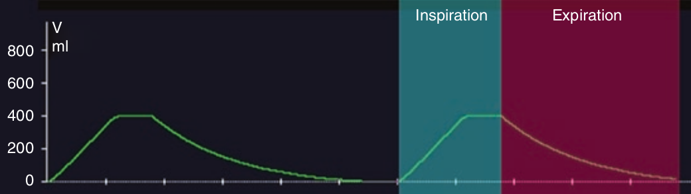

معمولاً در ونتیلاتور حجم بصورت مستقیم اندازهگیری نمیشود (به استثنای ونتیلاتورهای پیستونی)، بلکه بکمک شدت جریان به صورت سطح زیر منحنی شدت جریان – زمان مورد محاسبه قرار میگیرد. شیب به سوی بالا در منحنی حجم نشاند دهنده حجم دمی و شیب به سمت پایین نشان دهنده حجم بازدمی می باشد. هرگونه وقفهای بین این دو مربوط به مکث پایان دمی می باشد. ممکن است بین حجم دمی و بازدمی تفاوت جزئی وجود داشته باشد که علت آن خطای اندازهگیری شدت جریان و تفاوت این دو در از نظر حرارت و رطوبت می باشد. تفاوت بارز این دو ممکن است بخاطر نشت گاز تنفسی باشد. ولی لازم به ذکر است که منحنی حجم در پایان بازدم در هر حال به صفر بازگشت میکند تا دم بعدی را از صفر شروع کند در غیر این صورت این تفاوتها بر روی هم انباشته میشود و منحنی حجم در هر نفسی نسبت به نفس قبلی بیشتر صعود میکند و سرانجام از صفحه خارج میشود.

در منحنی حجم:
۱ – افزایش حجم همیشه بصورت خطی است
۲ – افزایش حجم همیشه بصورت نمائی است
۳ – کل منحنی حجم دمی بستگی به شکل منجنی شدت جریان دمی دارد
۴ – هنگام بازدم فعال، کاهش حجم بصورت نمائی میباشد
۵ – حجم دمی و بازدمی همواره مساوی هستند